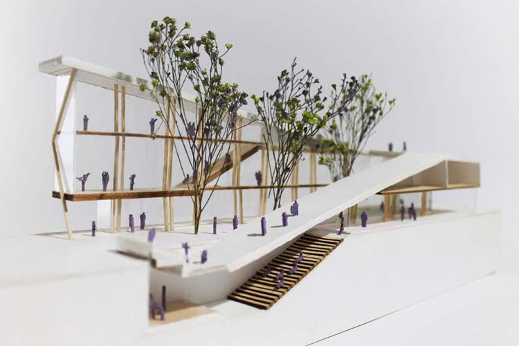

Acclivity
An urban market and performance venue in Portland, Oregon
Marketplaces are a great equalizers; the natural gradation between space and void provides a canvas for serendipitous experiences. Likewise, Acclivity is a gradation from below ground to sky. A green alleyway pierces through the building, pulling in the park blocks and allowing for a completely permeable first floor for a fully-functioning market during the warmer months and an enclosed interior market during the colder months.
Three theaters are provided. An open community “Light Box” is used to the discretion of the public: it functions as a beacon, opening out to the canopy of the park blocks from above.
Gradually sloping, walkable green roofs double as theater seating for the recessed “Green Box.”
The professional performance venue deemed “Black Box” is nestled underground beneath the Green Box.
The professional performance venue deemed “Black Box” is nestled underground beneath the Green Box.
The entire first floor opens in the warmer months to become a permeable, open-air market for visitors to enjoy.